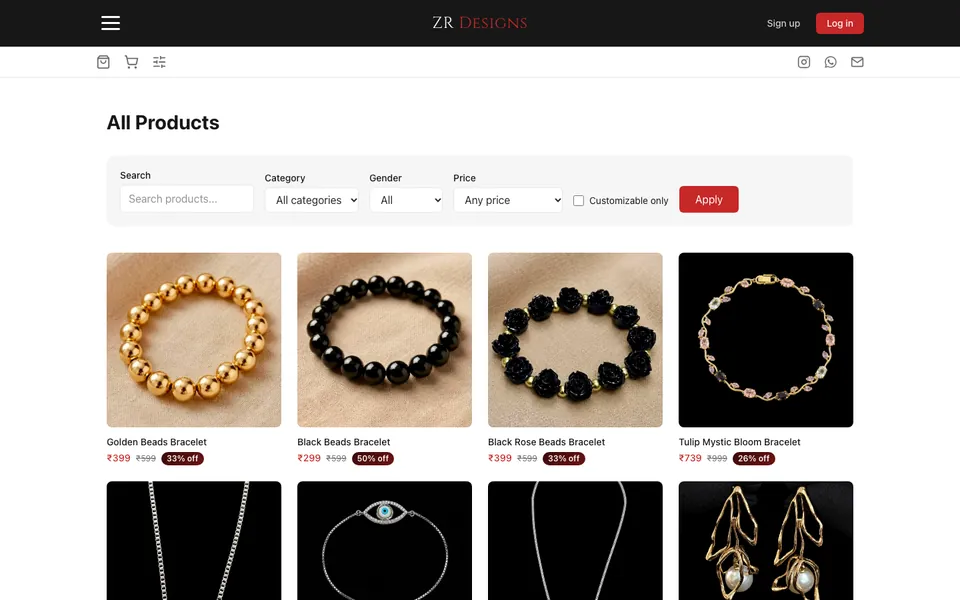

Home page · live


Completed
ZR Designs
An e-commerce website for custom, made-to-order stainless-steel keychains and pendants.
The brief: one storefront, two jobs. Let customers browse a ready-made range, and invite them to start something personal.
On the site
- Product catalogue and individual product pages
- Custom-order page for personal pieces
- SEO groundwork: sitemap, robots, structured data, social previews
Behind it
- Admin dashboard for products, orders, custom orders and coupons
- Supabase for accounts, data and customer uploads, with row-level security
- Razorpay checkout with server-side payment verification
- Type
- Client project · e-commerce
- Stack
- Next.js · Supabase · Razorpay
- Credit
- Design and development